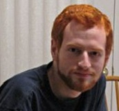

|
||||||||||
|
Home Page CS Home Rank Projects |
||||||||||
|
I rather like the layout of the current team page on wordpress so I mainly just copied the layout of it from there. This part here would be the team description and the rest would be as follows. Anastasia Semionova – Team Leader
 asemionova1@learn.senecac.on.ca My name is Anastasia Semionova. I find programming very interesting and challenging, and my success in Seneca College, my GPA is 4.0 and I am awarded with President’s Honor List twice, shows that I have a remarkable potential in this field. Throughout my academic career I have developed strong computer programming skills in various languages (Java/J2EE, Visual C#, C, C++, HTML/CSS, java_script), databases (Oracle PL/SQL, MySQL, MS Access), and also I have acquired expertise in working with different operating systems (Windows XP/Vista, UNIX, Linux, AS/400). Currently I am having an internship in Canadian Tire Online team as a Java Developer where my major responsibilities are improving the existing features and adding new features, requested by business people, on the main Canadian Tire web page (canadiantire.ca). This work experience is helping me to reinforce and deepen my Java programming skills as well as to expand my problem solving skills and improve my communication skills. Also, my previous work experience, as a project coordinator and draftsperson, has allowed me to develop management, leadership and team working skills and demonstrate my ability to work under pressure to meet tight deadlines. Matthew Schranz
mjschranz@learn.senecac.on.ca Hello, my name is Matthew Schranz. I’m in my fifth semester in Seneca College’s Computer Programming and Analysis program. After spending my time in other programs figuring out what career path I wanted to take, I finally found one that has stuck. I’ve grown to enjoy programming a lot because of the challenge it provides me. I have always enjoyed learning how things I come across in life work: home construction, motor vehicles and of course electronics. Taking the CPA Diploma has allowed me to apply that passion towards building my own applications and eventually work on important applications for businesses today. Technical Skills
Education Edouard Davlatian
edavlatian@learn.senecac.on.ca My name is Edouard Davlatian, I am currently in the 5th semester of the CPA program at Seneca College. In the past I have worked as a paid COOP student for Business Information Group (BIG) where I was a Web Technecian. I worked together with many different departments ranging from Publishing to Web development. During my time at BIG I worked with many technologies, the most prominent were: ASP.Net, XHTML, CSS, java_script, and MS SQL. I have also worked for DM&T Services where I was responsible for making changes to existing software and troubleshooting/debugging new software. Recently I worked for Beauty Voyage Salon and Spa where I was responsible for developing and maintaining a website. I was also responsible for the networking and computers at the business location. TECHNICAL SKILLS Bryan Cohen
 bmcohen@learn.senecac.on.ca My name is Bryan Cohen and I am in the 5th semester at Seneca College. I find programming very interesting and fun ever since my first course with programming in high school. Throughout the years I have learned a variety of languages including C/C++, Java, xHTML/CSS, VB.NET, Perl, PHP, and am in the process of learning COBOL. I’ve extensively used Microsoft Visual Studio to aid in my endeavors. My operating system of choice is Windows, but I can comfortably use Linux or AS/400 as well. Lastly, I’ve worked with a variety of database systems that use Oracle, DB2, MySQL, and MS SQL. I am always eager for a challenge and to figure out the best way to get a system functioning properly. |
||||||||||